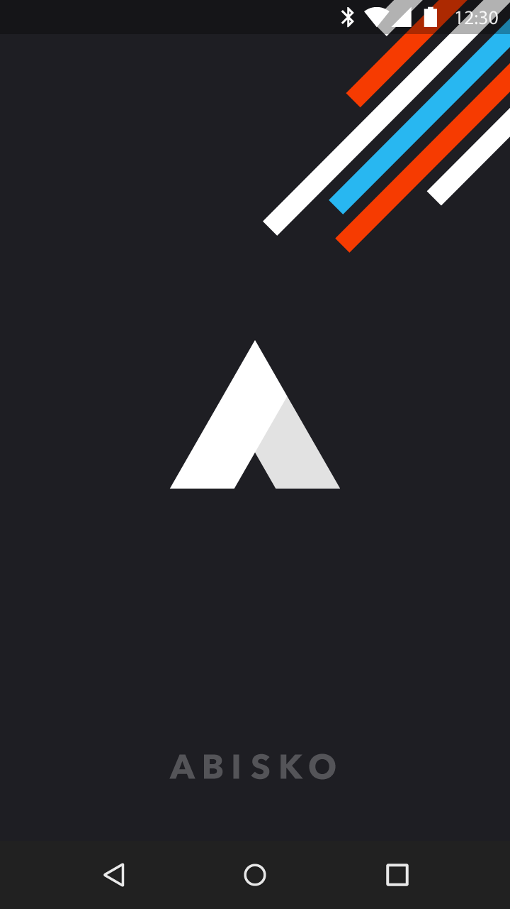
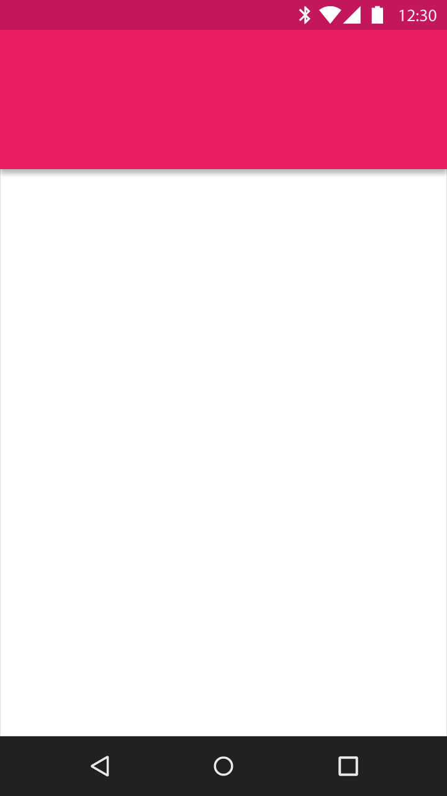

시작 화면은 사용자 어플리케이션의 첫 번째 사용자 경험입니다.
빈 화면을 표시하는 동안 당신의 앱을 실행하는 것은 인지된 로딩 시간을 증가시키기 때문에, 플레이스 홀더 UI나 브랜드가 적용된 시작 화면을 사용하는 것을 고려해 보십시오.
플레이스 홀더 UI는 앱 시작과 앱 내 액티비티 트랜지션 모두에 적절한, 가장 매끄러운 시작 트랜지션입니다.
브랜드가 적용된 시작 화면은 내용물에 초점을 맞춘 UI를 자유케 하는, 잠깐의 브랜드 노출을 제공합니다.

브랜드가 적용된 시작 화면

플레이스 홀더 UI